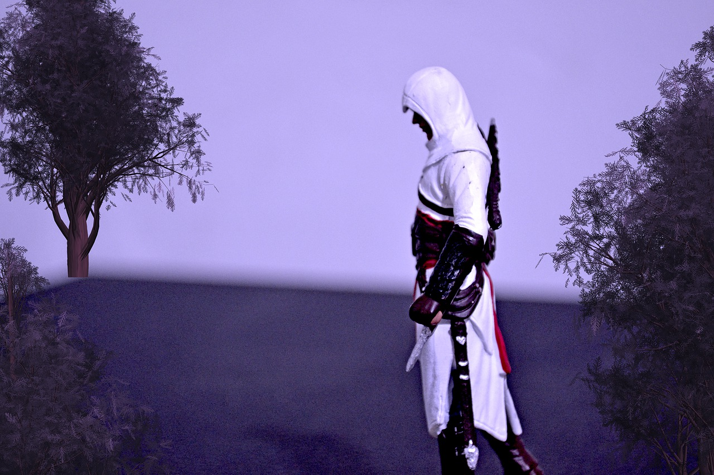

Assassin's Creed is a long-running action-adventure series that spans many periods in history. Although the series uses a slightly alternate history, the degree of accuracy to their retellings of historical events is rather high. The games hook people in with riveting gameplay and the power fantasy of being a stealthy, skilled warrior. However, as stated before, there is more to the franchise than mindless action. Allow me to go into a bit more detail...
An assassin, a individual suited for subduing key targets in history.
The first entry, releasing in 2007, takes the player to the Third Crusade in 1191, set in the holy land (around modern day Palestine, Israel, and Syria)where three Kings attempted to take back Jerusalem from a sultan by the name of Saladin. While the conflict between Assassin's Brotherhood and the Templar Order (the good guys and bad guys of the games' overarching plot) is not historically accurate, there are bits and pieces that mirror real life events, such as how Conrad of Montferrat and other notable Christian leaders were killed by a band of assassin's influenced by Hassan-i Sabbah, the actual historical leader of said group. While these events are not depicted in game, the assassination missions the player is tasked with are somewhat similar.
Certain historical locations are available to explore in the game as well, such as Masyaf Castle, Ummayad Mosque ,the Dome of the Rock, and Church of the Holy Sepulchre. While the exact layouts are not the same as their real life counterparts, the fact that they are locations the player is likely to explore and have fun in inspires a sense of curiosity that can make the people that play the game take a step back and start learning more about the locations and events that are depicted or referenced within the game.
That phenomenon of inspiration and questioning that the series breeds in its players is what makes the franchise such a useful tool for teaching history. Although there are many liberties taken for the games' own stories and gameplay reasons, the feeling of immersion you get from being placed within these different time periods and taking part in stories that resemble real life events is enough to make anyone start doing some digging and finding out more about, say, the Italian Renaissance (Assassin's Creed II), American Revolution (Assassin's Creed III), or the Industrial Revolution (Assassin's Creed: Syndicate).
The fact that this series has garnered so much acclaim shows that games can be used as a starting point for sparking an interest in history!